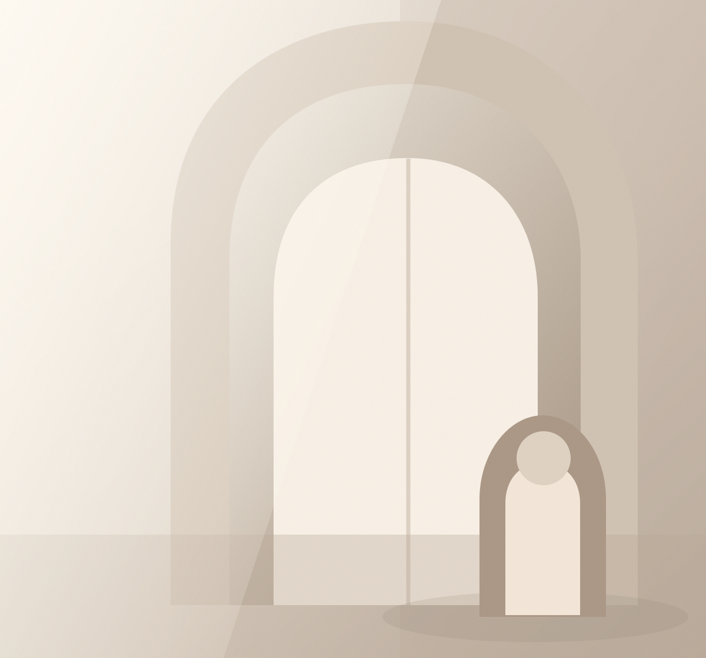
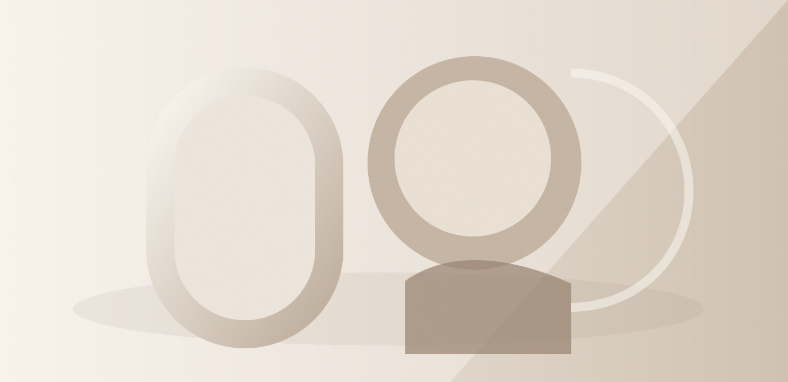

피부 결 및 흔적
고민별 정보 탐색 구조의 예시입니다.
정보 구조 보기 →Quiet medical luxury · Proposal
고민에서 출발해 정보를 비교하고, 충분히 이해한 뒤 다음 질문을 준비하는 경험을 제안합니다.
브랜드명·이미지·문구는 검토용 제안입니다.

01 / Explore by concern
진단이 아닌 정보 탐색을 위한 가상 분류입니다. 실제 적합성은 의료진의 평가가 필요합니다.
고민별 정보 탐색 구조의 예시입니다.
정보 구조 보기 →검증 전 범주이며 시술 추천이 아닙니다.
정보 구조 보기 →가상 사용자 탐색 시나리오입니다.
정보 구조 보기 →02 / Explore by treatment
대상과 한계, 위험과 회복, 비용 조건을 같은 수준으로 다룹니다. 실제 시술 데이터가 없는 항목은 명확히 구분합니다.
시술 상세 템플릿 보기
03 / Medical trust
의료진 자격, 정보 출처, 검토일, 주의사항을 확인할 수 있는 구조를 제안합니다. 현재 실제 의료진이나 의료기관 정보는 등록되어 있지 않습니다.
04 / Next step
상담은 정보를 묻는 과정, 예약은 방문 일정을 신청하는 과정입니다. 본 프로토타입은 상담 데모만 구현하며 실제 접수하지 않습니다.
방문 안내·FAQ는 P01~P12 확장 승인 후 별도 페이지로 구현 예정입니다.